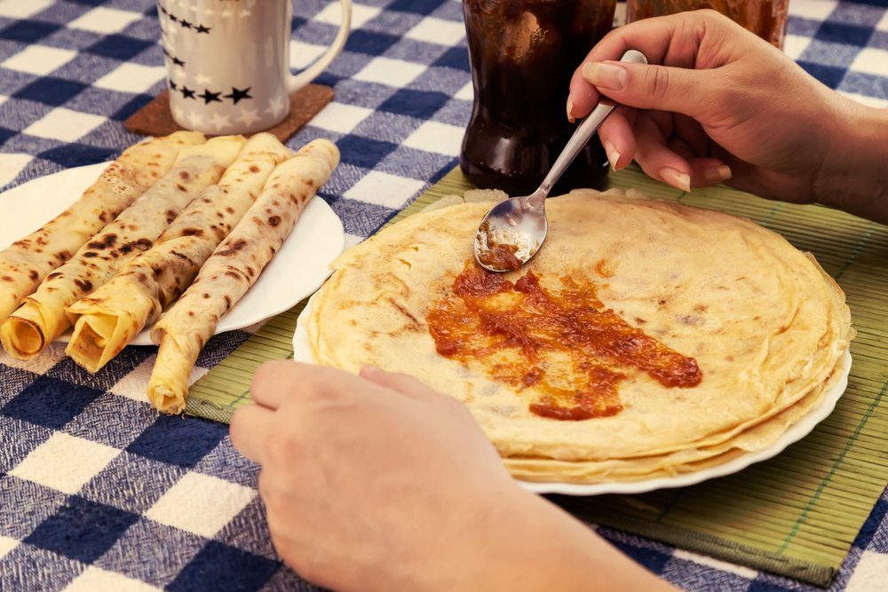

A LEGJOBB PALACSINTATÉSZTA

Hozzávalók
- 20 dkg liszt (1 púpos ek = 2 dkg)
- 2 db tojás
- 3 dl tej
- 2 dl szénsavas ásványvíz
- 1 csipet só
- 3/4 dl olaj (+ a sütéshez)
Elkészítés
- A palacsintatészta hozzávalóit összekeverjük egy tálban, majd pár percig pihentetjük.
- Az első palacsinta sütése előtt a forró serpenyőbe egy kevés olajat öntünk (a következő palacsintáknál erre már nincs szükség, maximálisan elegendő, ami kisül a tésztából).
- A palacsintákat egyenként kisütjük, majd ízlés szerinti töltelékkel kínáljuk.
Add meg a véleményedet
Készítette: Takács Soma |Toth Soma